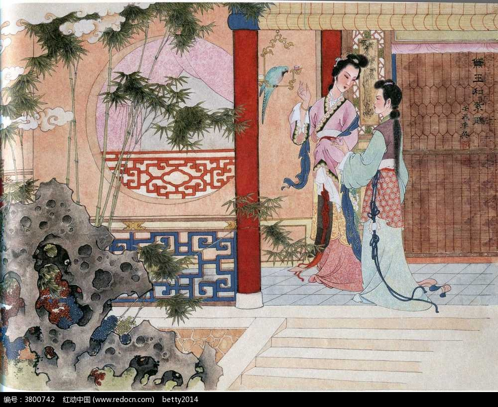

西厢记

《西厢记》故事，最早起源于唐代元稹的传奇小说《莺莺传》，叙述书生张珙与同时寓居在普救寺的已故相国之女崔莺莺相爱，在婢女红娘的帮助下，两人在西厢约会，莺莺终于以身相许。 后来张珙赴京应试，得了高官，却抛弃了莺莺，酿成爱情悲剧。亦相传为元稹假借张生的自传体小说或故事。这个故事到宋金时代流传更广，一些文人、民间艺人纷纷改编成说唱和戏剧，王实甫编写的多本杂剧《西厢记》就是在这样丰富的艺术积累上进行加工创作而成的。 历史上，“愿普天下有情人都成眷属”这一美好的愿望，不知成为多少文学作品的主题，《西厢记》便是描绘这一主题的最成功的戏剧。